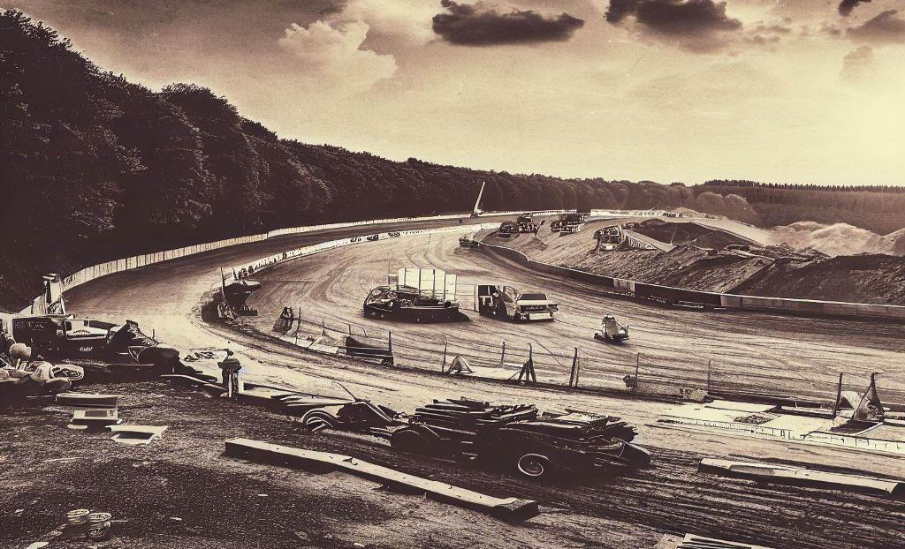
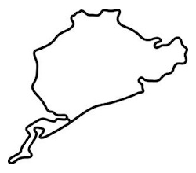
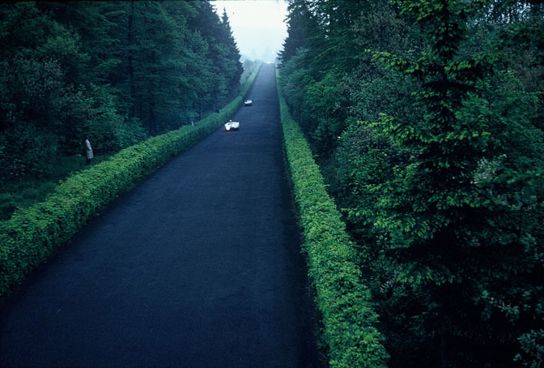
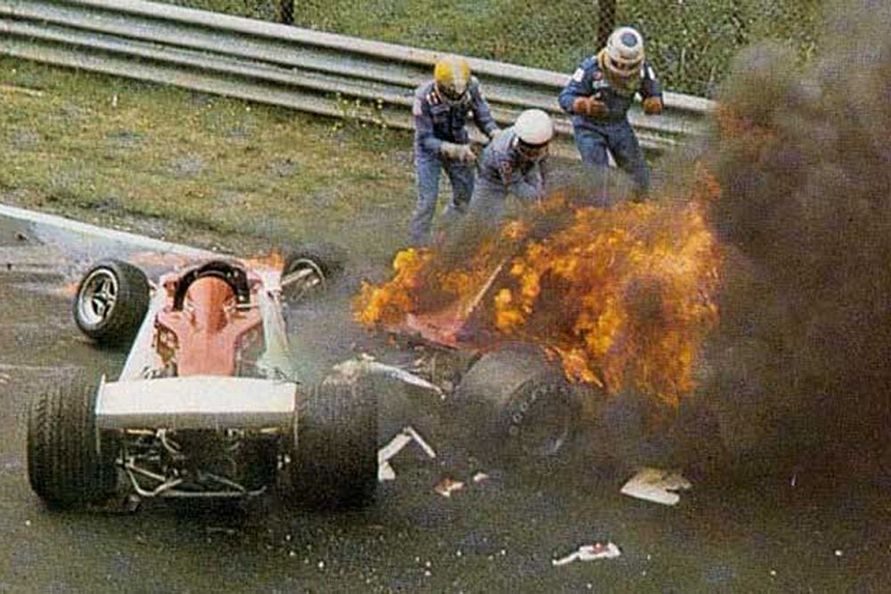
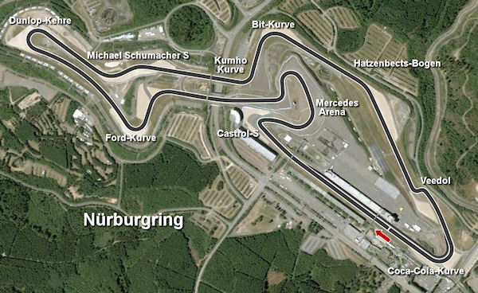
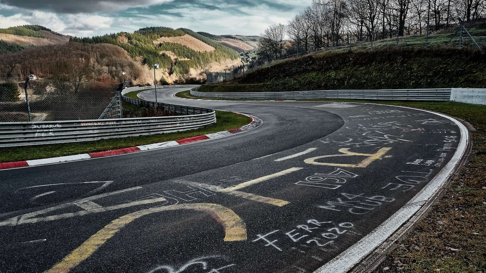
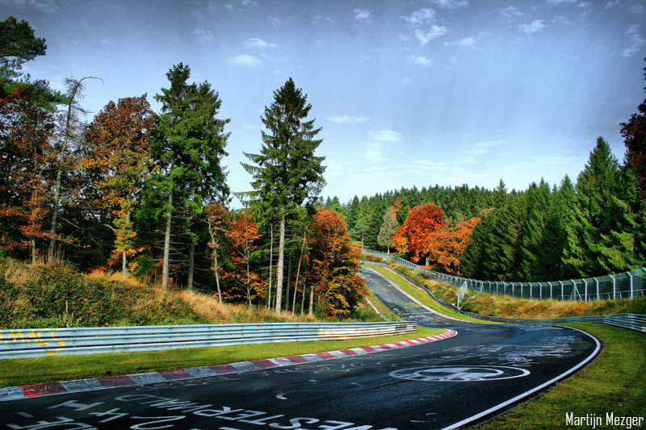
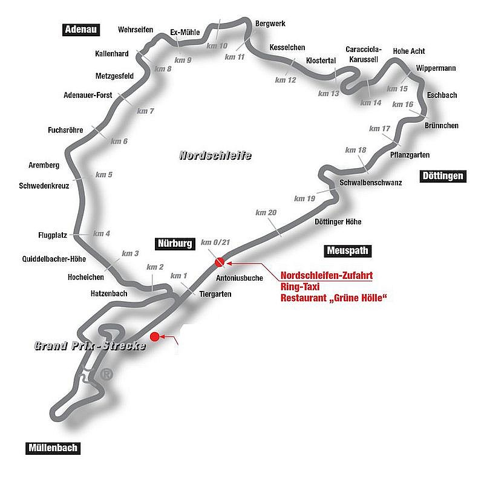
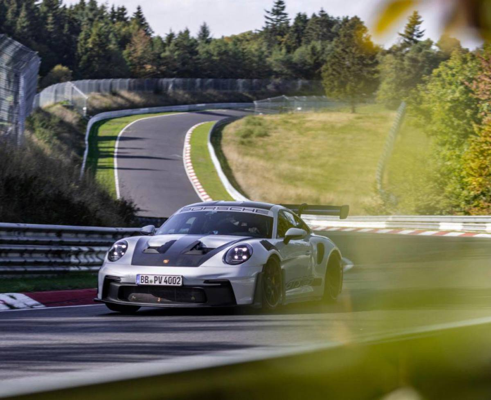

Història
Orígens i construcció
Nürburgring és un circuit de curses situat a Nürburg, Alemanya, construït l'any 1925. La seva història comença als anys 20
quan es va concebre la idea de construir un circuit per donar feina a la població local, promocionar la regió i proporcionar
una instal·lació segura per a les curses d’automòbils, que en aquella època es disputaven principalment en carreteres públiques.

Primers anys i configuració original
El circuit original es va inaugurar el 18 de juny de 1927. Era una pista llarga i tècnica que recorria la serralada d'Eifel.
- Nordschleife (l'Anell Nord), amb 22,8 km, famós per les seves corbes complexes i canvis d'altura.
- Südschleife (l'Anell Sud), més curt i menys conegut.

Els anys d'or (1930-1960)
Durant els anys 30, Nürburgring es va consolidar com un lloc destacat per a les curses de Grand Prix. Va acollir campionats
d'Alemanya i curses internacionals.

Transformacions i perill (1960-1976)
Amb l'augment de la velocitat i els avenços tecnològics dels cotxes, el circuit va començar a ser vist com extremadament perillós.
La seva configuració estreta, els pocs espais de seguretat i les condicions meteorològiques imprevisibles el van convertir en un
desafiament mortal.
El 1976, el pilot Niki Lauda va patir un accident gairebé fatal durant el Gran Premi d'Alemanya, marcant un punt d'inflexió per
a la seguretat de les curses. A partir d'aleshores, el circuit Nordschleife va deixar de ser utilitzat per a les curses de Fórmula 1.

Redisseny i nova era (1980-actualitat)
Després de l'accident de Lauda, es va construir un nou traçat molt més curt i segur, conegut com Nürburgring GP-Strecke,
que es va inaugurar el 1984.
Actualment, el Nordschleife és famós per les seves "sessions públiques" (Touristenfahrten), on qualsevol pot conduir el seu
cotxe pel circuit, i també per les curses d'endurance, com les 24 Hores de Nürburgring.

El Nürburgring avui
Combina tradició i modernitat: el traçat modern acull esdeveniments com la Fórmula E i curses de resistència, mentre que el
Nordschleife continua sent un repte temut i admirat per pilots professionals i aficionats.

Per què Nürburgring és tan important per les marques de cotxes?
Varietat de condicions úniques
Disseny tècnic i exigent: Amb més de 20,8 quilòmetres de longitud, el Nordschleife compta amb 154 corbes i
canvis d'altitud extrems (més de 300 metres).
Condicions meteorològiques: És freqüent trobar una part del circuit seca i una altra mullada, reproduint
situacions reals que un cotxe ha d'afrontar.

Pressió extrema en rendiment i durabilitat
El Nürburgring posa al límit components com els frens, el motor, la suspensió i els pneumàtics. Marques utilitzen el circuit
per fer proves intensives, com conduir milers de quilòmetres en condicions constants d'alta exigència.

Màrqueting i prestigi global
Un bon rendiment al Nürburgring és una eina poderosa per vendre cotxes, especialment en el segment dels esportius i premium.
El consumidor veu el circuit com un símbol d’excel·lència i rendiment.
